2 데이터 사이언스로 여는 세상
2.1 서론
데이터 중심으로 돌아가는 세상에 발맞추기 위해서는 생산된 데이터를 수집, 분석하여 능동적으로 대처해야 함
거대한 데이터의 파도를 이기는 것이 곧 경쟁력이며 지속 가능한 생존능력이므로 결국 데이터 과학자는 데이터 시대에 미래를 창조하는 원동력을 제공할 것임
2011년 IBM은 자연어를 인식하여 인공지능에 의해 답변할 수 있는 왓슨(Watson)을 미국의 유명한 퀴즈쇼인 제퍼디(Jeopardy)에 출연시켜 그 능력을 입증함: 100만 달러 상금
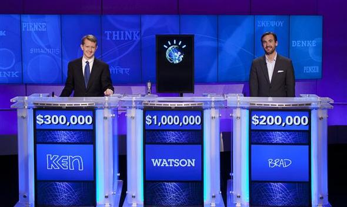
- 인공지능의 현실화와 데이터 과학자가 미래를 변화시킬 수 있는 능력자임을 확인한 사례
알파고(AlphaGo)
- 심층학습(deep learning) 방법을 이용하여 바둑을 학습
- 기계학습(machine learning)의 하나로, 비지도 학습(unsupervised learning)을 통해 컴퓨터 스스로 패턴을 찾고 학습하여 판단하는 알고리즘 적용
- 인간이 지시하는 대로 따라서 하는 것이 아니라 별도의 기준을 정해주지 않으며, 대신 방대한 빅데이터를 기반으로 컴퓨터가 스스로 분석하고 학습하여 결정을 내리는 것이 특징
- 1,202개의 CPU로 구성
- 2017년 5월 은퇴(전적 73승 1패-이세돌)
- 알파고제로(AlphaGo Zero)
- 2017년 10월 공개
- 알파고처럼 기보가 아닌 순수 독학으로 학습
- 한 수에 0.4초가 걸리는 초속기 바둑으로 490만판을 혼자 두며 연구
- 알파고 제로는 바둑 규칙 이외에 아무런 사전 지식이 없는 상태로 인공신경망 기술을 활용하여 스스로 대국하며 바둑 이치를 터득
- 알파제로(AlphaZero)
- 2018년 공개
- 인간이 이룩한 지식이나 기보의 도움 없이 독학으로 바둑, 체스, 쇼기(일본 장기) 등을 독파한 인공지능 프로그램
- 과학 학술지 “사이언스(Science)”지에 발표
- 바둑을 뜻하는 고(Go)를 빼서 범용 인공지능으로 발전
- 2016년 체스 AI 챔피언인 스톡피쉬를, 2017년 쇼기 AI 챔피언인 엘모를 상대로 모두 이김
- 알파제로의 바둑 실력은 세계 최고 프로기사가 두 점을 미리 깔고 두어야 할 정도
- 뮤제로(Muzero): 2020년
2.2 편리한 사회
2.2.1 추천 서비스
2.2.1.1 넷플릭스(Netflix)의 비디오 추천
- 넷플릭스는 미국 최대의 온라인 영화 유료 스트리밍 서비스를 제공하는 회사로, 빅데이터의 활용 및 데이터 과학자들의 공식적인 탄생방식과 창구를 만듦
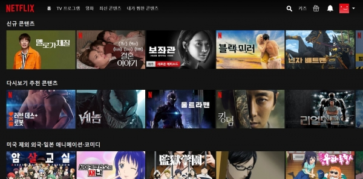
- 영화를 관람한 고객들의 등급결과 및 고객들의 유사 취향을 기반으로 영화를 추천하는 협업 필터링(collaborative filtering)과 이와 같은 방법을 연구하고 도출하는 데이터 과학자들의 경쟁의 장인 ’넷플릭스 대상(Netflix Prize)’으로 널리 알려짐
협업 필터링
- 협업 필터링이란 여러 사람의 콘텐츠 평가 데이터, 즉 기호정보(taste information)를 바탕으로 많은 콘텐츠를 필터링하여 사용자 성향에 가장 가까운 콘텐츠를 추천하는 시스템
- 사용자 기반 필터링
- 유사한 사용자들을 찾은 후, 해당 사용자가 보거나 구입하지 않은 아이템을 추천하는 방식
- 아이템 기반 필터링
- 아이템들 간의 유사성을 계산하고, 유사한 아이템들 중 보거나 구입하지 않은 아이템을 추천하는 방식
위의 두 가지 접근방법은 사용자들의 선호도만 고려한 결과이지만 이와 더불어 축적된 사용자 행동정보를 활용한 모형 기반 협업 필터링(model-based collaborative filtering)이 연구되어 왔음
- 온라인상 페이지 이동 패턴
- 해당 페이지에 머무른 시간
- 실제 구매 내역
- 소셜네트워크상의 추천 등의 정보 등등
넷플릭스 대상 경연대회(Netflix Prize Competition)
- 이 대회는 넷플릭스의 협업 필터링 알고리즘인 시네매치(Cinematch)의 정확도를 최고로 향상시키는 팀별 경연대회로 2006년에 시작되어 2009년까지 개최됨
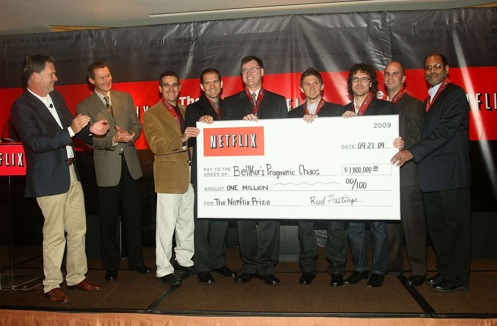
- 대상을 받은 벨코어팀의 알고리즘은 아이템과 사용자의 내재된 특성을 행렬 인수분해(matrix factorization) 기법을 적용하여 표현함
- 벨코어팀은 x축은 남성 혹은 여성 성향의 사용자 취향, y축은 심각한 영화 혹은 비현실적인 영화로 나누어 각 영화의 특성을 공간상의 수량을 표현함
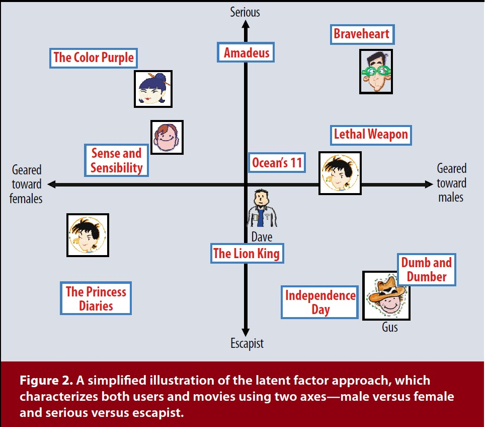
2.2.1.2 데이터 과학자의 검투장, 캐글(Kaggle)의 탄생
넷플릭스 대회는 역사 속으로 사라졌지만 이와 같은 경연대회의 의미와 그 중요성은 널리 인식되어 2010년 캐글(http://www.kaggle.com)과 같은 데이터 과학자 경연대회 플랫폼이 탄생함
기업이나 연구소에서 데이터를 캐글에 공개하고 상금 등을 걸어 분석대회를 개설하면, 전 세계의 통계 전문가 혹은 데이터마이너들이 가장 최적의 모형 등 분석결과를 얻기 위해 경쟁하게 됨
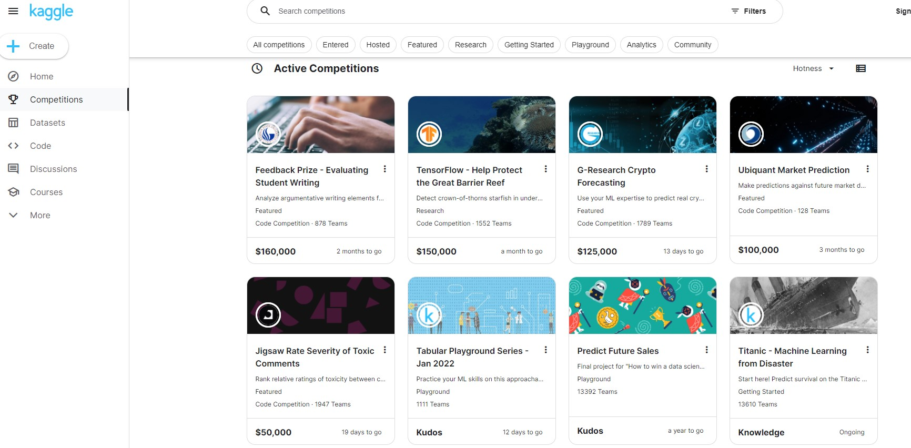
캐글의 의의
- 데이터 과학자의 발굴
- 캐글 경쟁에서 입상 경력은 일종의 데이터 과학자임을 보여 주는 좋은 기회
- 실제 캐글은 경연대회에서 우수한 성적을 거둔 데이터 과학자의 순위를 공개하거나 포럼을 운영하고, 구인 구직란을 통해 기업, 연구소와 데이터 과학자를 연결하는 역할을 하고 있음
- 크라우드소싱 방식을 통한 최고의 분석결과 취득
- 크라우드소싱(crowdsourcing): 온라인을 통해 다수의 참여에 의한 서비스, 아이디어를 얻는 과정
- 캐글에 데이터를 공개하여 문제를 해결하려는 기업이나 연구소는 캐글을 통해 저렴한 방법으로 최고의 결과를 얻을 수 있음
2.2.2 맞춤형 개인화 서비스
2.2.2.1 아마존의 예측배송(Anticipatory Shipping)
아마존(http://www.amazon.com)은 빅데이터 시대의 대표적인 혁신기업으로 회자됨
인터넷 도서판매에서 시작한 아마존은 인터넷 쇼핑은 물론 세계 최고, 최대의 크라우드 컴퓨팅 서비스를 제공할 뿐 아니라 태블릿뿐만 아니라 지금은 스마트폰까지 그 영역을 확장하고 있음
온라인뿐 아니라 2013년에 소개한 무인 드론(drone)을 이용한 아마존 프라임 에어(Amazon Prime Air) 서비스를 통해 기존의 물류방식이 도저히 대적할 수 없는 빠른 배송 수단을 계획 중임
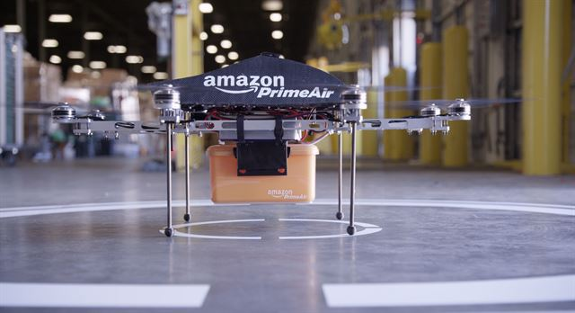
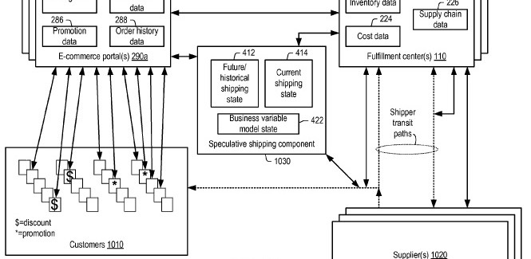
[ 아마존 예측배송 특허 내용 ]
- 소비자의 행동을 파악하여 해당 물품을 구입하기 전 근처 물류센터로 미리 배송하여 준비하는 예측배송 시스템을 준비 중임
- 실제 주문 시 배송시간을 획기적으로 줄일 수 있으며 예상과 달리 주문이 이루어지지 않으면 추가 할인을 통해 구매유도까지 연결함
- 아마존의 예측배송은 기존의 상품추천과는 달리 기업이 고객의 움직임과 성향을 분석하여 사전 배송을 준비한다는 측면에서 기업은 큰 위험성을 갖고 있는 만큼 고도의 데이터 분석기술이 필요함
- 사용자의 행동 분석 및 예측모형
- 구매하려는 제품 종류 및 가격을 고려한 구매 패턴 분석
- 최적 제품가격 제시모형
2.2.2.2 구글의 스마트 카 서비스(Smart Car Service)
- 2011년 미국의 자동차 제조회사인 포드(Ford)사는 운전자의 과거 행선지를 기억하고 탑승하는 운전자에게 행선지를 예측하여 최적의 경로와 경로에 맞는 최적의 운전방법을 알려 줌으로써 에너지 절약효율을 극대화하는 방안을 제시함
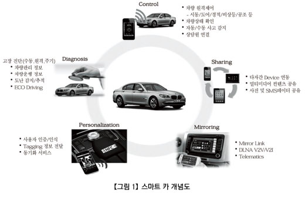
- 각 운전자에 대한 과거 운전한 날짜, 시간별 운전경로는 구글이 제공하는 저장 장소에 기록되고 축적된 운전자 데이터를 구글이 제공하는 예측 서비스를 통해 행선지가 예측됨
- 예측모형은 구글의 예측 응용프로그램인터페이스(Prediction API)라는 클라우드 서비스를 통해 자동으로 개발되어 제공됨
- 구글의 예측 응용프로그램인터페이스는 자동차에서 전송된 데이터가 구글의 저장소에 축적되고 그 데이터를 구글의 예측 엔진이 분석하는 서비스
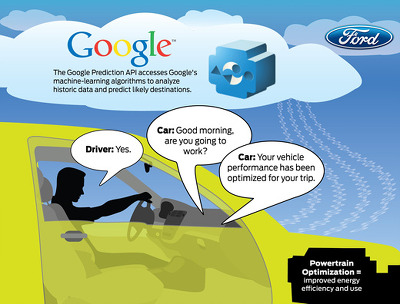
[구글이 제공하는 포드 스마트 카 서비스 개념도: http://code.google.com/apis/predict/ ]
구글의 예측 응용프로그램인터페이스를 이용하여 고객의 감성 분석, 스팸 메일 탐지, 의심스러운 행동 발굴 등에 필요한 다양한 예측모형을 개발할 수 있음
이와 같은 예측 및 새로운 개념의 서비스는 구글의 무인자동차로 발전하고 있으며, 이는 데이터 축적에 따른 데이터 과학자의 상상과 실현의 힘에 의해 가능함
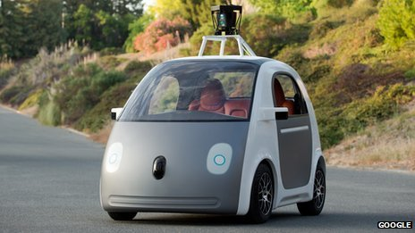
- 테슬라 무인주행: https://drive.google.com/file/d/17y3wBim_dJw60AYpzgPBgC1-Y4OQ0TxP/view?usp=sharing
2.3 윤택한 사회
2.3.1 건강한 삶
2.3.1.1 구글의 독감 발생 예측
- 구글은 감기 혹은 독감과 관련된 각종 검색어를 통해 감기의 발생 및 확산을 예측하였는데, 그 결과가 미국 질병통제예방센터(Center for Disease Control and Prevention, CDC)보다 앞선다는 사실로 화제가 됨
- 2009년, 신종 인플루엔자(H1N1)의 전세계적 유행을 놓침
- 2013년 실제 독감 발생률보다 2배 더 많은 감염자 예측으로 인해 신뢰성을 잃고 서비스 종료
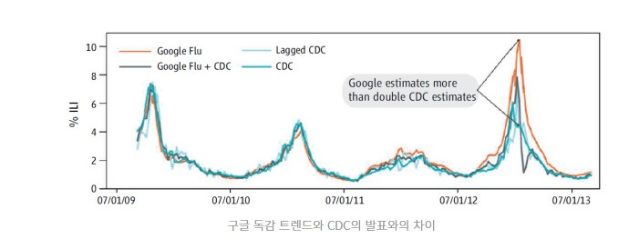
- 이와 같이 수많은 사람의 관심 키워드를 통해 트렌드를 예측할 수 있는 연구는 독감예측 이전에 구글 내부적으로 많은 연구가 선행됨
- 검색어 트렌드 기반 경제 관련 예측과 관련된 연구로 구글의 수석 경제학자인 할 베리안이 유명한데, 그는 미국 버클리 대학의 교수이기도 했으며, 정보기반의 경제현상을 연구하는 데이터 과학자라고 할 수 있음
2.3.1.2 바이오인포매틱스(Bioinformatics)
- 국제적인 과학연구 프로젝트인 인간유전체프로젝트(Human Genome Project)를 통해 2003년 인간 DNA 지도가 완성됨
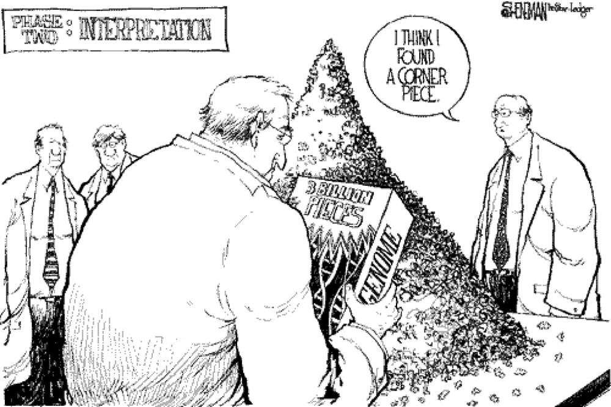
[Drew Sheneman]
- 당시 프로젝트가 가능했던 것은 생물학과 IT가 결합한 생물정보학, 바이오인포매틱스라는 학문 때문이었음
- 흩어진 어마어마한 DNA 정보의 서열을 맞추기 위해 분산처리 컴퓨팅이 동원되는 등 빅데이터 시대에 데이터 과학자가 활용해야 하는 각종 기술을 동원함
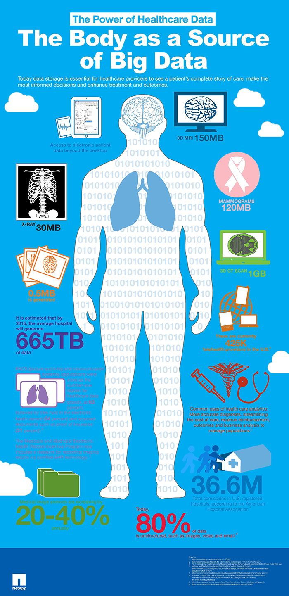
[ 넷앱(NetApp)사에서 제공하는 인포그래픽스 ]
- 바이오인포매틱스는 주로 유전자를 구성하는 총 네 종류의 염기 A(아데닌), T(티민), G(구아닌), C(사이토신) 배열인 염기서열에 따라 어떠한 단백질로 발현되는가를 연구함
- 특정 단백질 덩어리가 생기는 원인이 되는 유전체 혹은 해당 단백질로 발현되는 특정 염기서열을 찾는 것
- 이를 위해 수없이 반복되는 정교한 실험을 통한 데이터 수집, 복잡도가 높은 데이터를 분삭하는 첨단 기법, 복잡한 데이터를 계산하기 위한 컴퓨팅 환경구축 등 생물학, 통계학 및 전산학 등이 총동원되어야 함
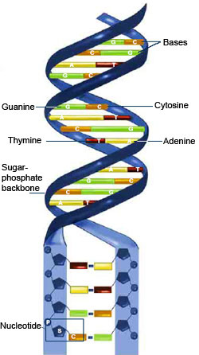
[DNA]
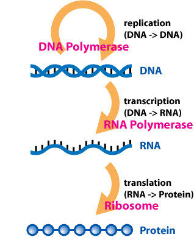
[Central dogma]
Bioinformatics is an interdisciplinary field that develops statistical, mathematical, and computational methods and software to study biological data.
Bioinformatics combines biology, statistics, & computer science, among others.
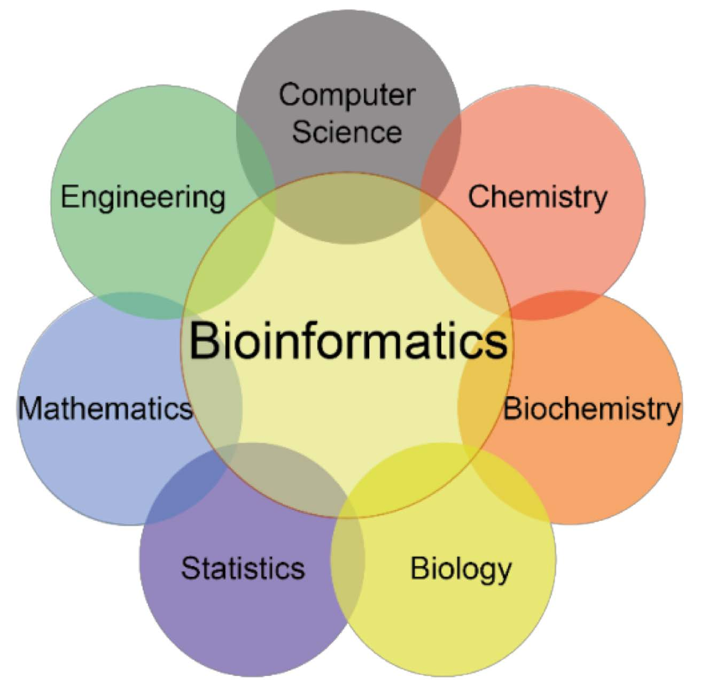
빅데이터 시대를 맞아 바이오인포매틱스는 인간의 유전적 특징을 파악하여 질병 질환을 예측하고 개인 특성에 맞는 치료법을 개발할 수 있는 해결책으로 다시 조명받고 있음
인간으로부터 얻을 수 있는 각종 의료 관련 기록, 예를 들어 과거 의료기록, CT 촬영 영상기록까지 결합하여 인간의 삶을 더욱 윤택하게 할 가능성이 있음
2.3.1.3 착용장치(wearable device)에 의한 건강관리
컴퓨터는 작아지고 가벼워지면서 손 안에 들어오는 스마트폰에서 안경이나 손목에 차는 시계 또는 밴드와 같이 우리 몸에 착용하는 웨어러블(wearable) 형태의 장비로 진화하고 있음
손목에 차는 밴드나 스마트 시계를 통해 사람의 맥박, 혈압, 운동량, 심지어 자는 동안의 숙면 정도를 측정하여 인터넷을 통해 수집 데이터를 해상 사이트에 올리면 대시보드(dashboard)를 통해 현황을 보여 줌
- 데이터는 스마트폰이나 PC를 통해 업로드가 가능하며 식사 종류도 기록하여 섭취, 소비한 칼로리도 계산해 줌
- 운동량과 수면상태, 섭취한 칼로리 등을 계산하여 적절한 운동을 권장할 수 있으며, 걷기나 운동량은 사회관계망을 통해 많은 사람과 공유하며 본인의 건강관리를 스스로 독려할 수 있음
[ 웨어러블 디바이스: https://www.elec4.co.kr/article/articleView.asp?idx=25692 ]
- 착용한 기기, 즉 센서를 통해 데이터가 자동으로 수집되고 인터넷을 통해 데이터가 축적되는 것은 사물인터넷(Internet on Things, IoT)의 일종이라고 할 수 있음
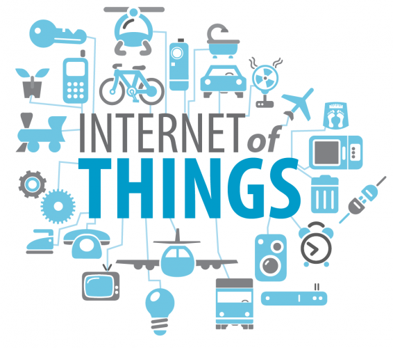
[ 사물인터넷: https://copycode.tistory.com/70 ]
- 사물인터넷은 인터넷 기반으로 연결되어 데이터 수집이 용이하며 빅데이터의 새로운 영역으로 각광받고 있음
- 집의 온도를 조절하는 컨틀로러가 와이파이(WiFi)로 연결되고, 냉장고, 세탁기 등의 가전 활용 현황이 인터넷을 통해 데이터가 전달된다면 사용자의 행동을 분석하여 생활 패턴이나 기호를 파악할 수 있음
- 최적의 에너지 활용안을 각 가정에 제시하거나 해당 제품의 고장 등을 예측 할 수 있는 서비스 개발이 가능함
- IOT의 허와 실: https://drive.google.com/file/d/13yjXxIhZMGkh94QfhzLWM3XQAqvurLet/view?usp=sharing
2.3.2 연결된 사회
2.3.2.1 추억과 공감대 형성을 위한 연결
아이러브스쿨(1999)
싸이월드(2001)
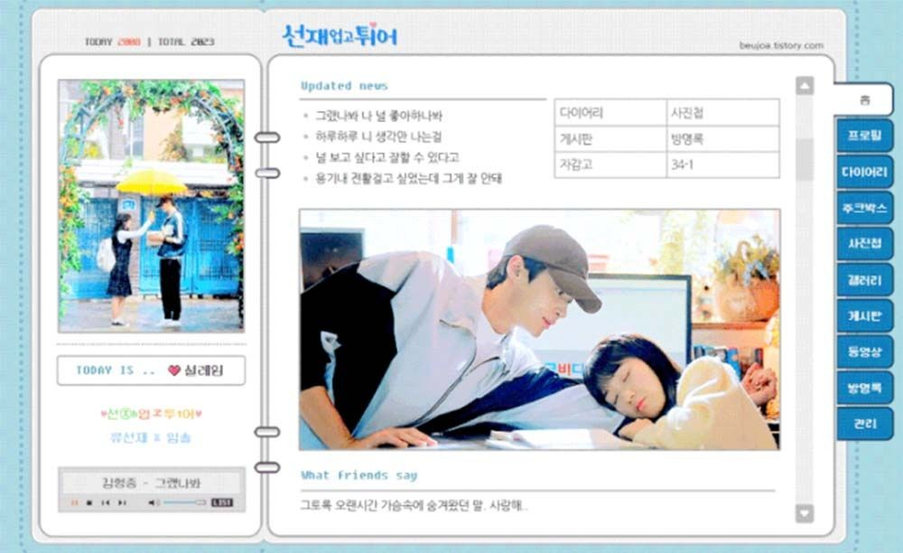
페이스북(facebook, 2003)은 친구 맺기를 통해 관계망을 형성하는 대표적인 SNS(Social Network Service, 사회관계망 서비스)임
- 친구가 게시한 내용에 대하여 ‘좋아요’ 버튼을 눌러 관심과 호감을 표현하기도 하고, 기업이나 유명인 등의 팬 페이지의 ‘좋아요’ 버튼을 통해 구독할 수 있음
- 복잡하게 얽힌 사회관계망을 통해 개인적인 즐거움, 근황, 취미 등을 공유하기도 하지만, 특정 브랜드에 대한 사용자 개인의 관심과 선호도를 나타내며 그 행동을 전파하는 거대한 플랫폼임
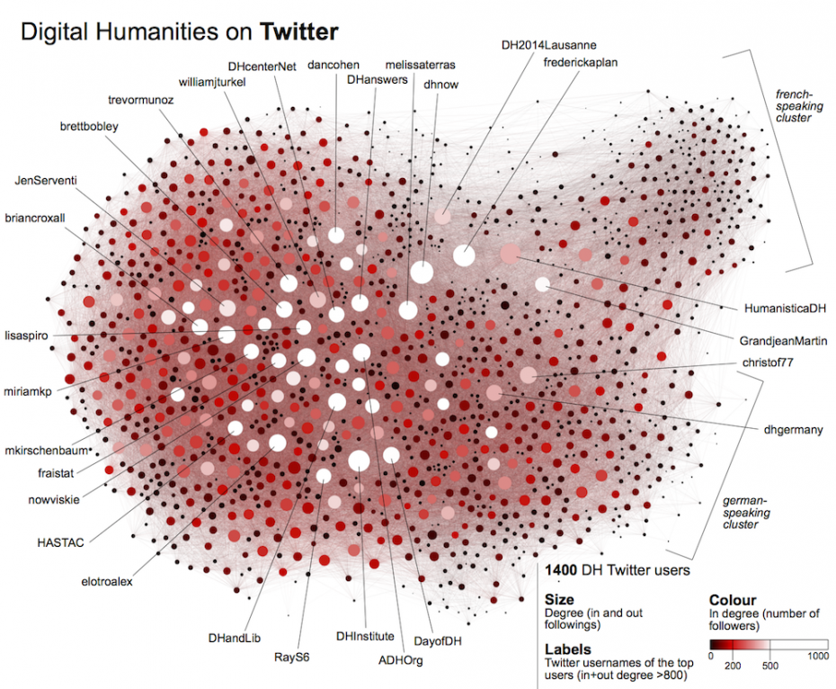
[ Digital Humanities on Twitter: http://www.martingrandjean.ch/digital-humanities-on-twitter/ ]
페이스북도 구글과 같이 서버와 데이터 센터 건립 등 모든 주요 기술을 공개 소프트웨어 기반으로 자체 구축하고 다양한 전문지식에 특화된 데이터 과학자의 집단임
페이스북은 구글이 핵심 기술 비공개 원칙을 고수하는 것에 반해 오픈 컴퓨트 프로젝트(Open compute Project)를 통해 서버 및 네트워크 장비 설계, 데이터 센터 건립에 필요한 각종 기술을 공개한 바 있음
페이스북은 저렴하고 빠르면서 확장성이 보장되는 컴퓨터 서버 등의 하드웨어 설계능력, 상상을 초월하는 빅데이터를 수집, 저장하고 조회하는 소프트웨어 개발능력, 사용자들 간의 관계와 행동을 분석하는 데이터 분석능력이 조화를 이루는 최고의 데이터 과학자 집단을 형성하고 있음
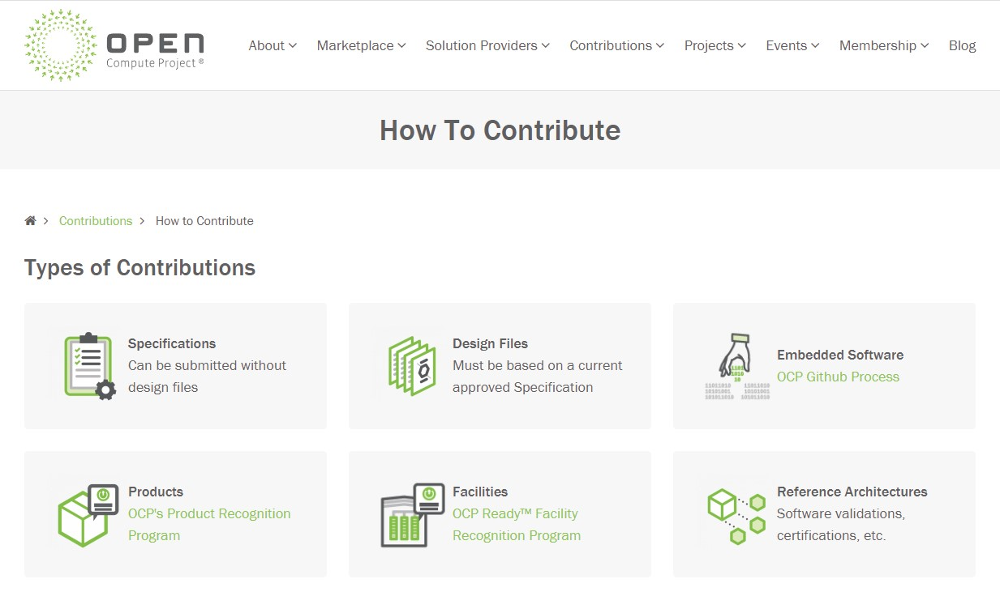
[ 오픈컴퓨트 홈페이지: https://www.opencompute.org/contributions/how-to-contribute ]
2.3.2.2 전문가들 간의 연결
페이스북이 동창, 동료, 친구들 간의 관계 형성이라고 한다면, 링크드인(http://www.linkedin.com)은 본인의 경력과 이력을 공개하고 전문분야에 대한 인정을 동료나 지인으로부터 인정받으며 관계망을 형성함
링크드인은 개인이 스스로 작성한 이력 공개 및 그 내용에 대한 인정, 그리고 인정과정에 참여한 관계망이 공개되어 상당한 신뢰를 주는 구인 구직 정보를 제공함
링크드인은 관련 전문가들을 지속적으로 연결하기 위해 데이터 처리 및 관계망 파악에 필요한 많은 데이터 과학자로 구성된 링크드인 데이터팀을 운영하고 있음
- 링크드인이 이력과 경력을 공개한 개인 본인의 이메일 주소계정에 접속할 수 있도록 허락하면 메일 주소를 사용하는 해당 링크드인상의 타인을 소개하는 방식으로 관계망을 구축함
- 전문분야가 같거나 관심사가 같은 사람들 혹은 같은 회사에 근무했던 링크드인 상의 사람들을 소개하며 전문가 네트워크를 구축
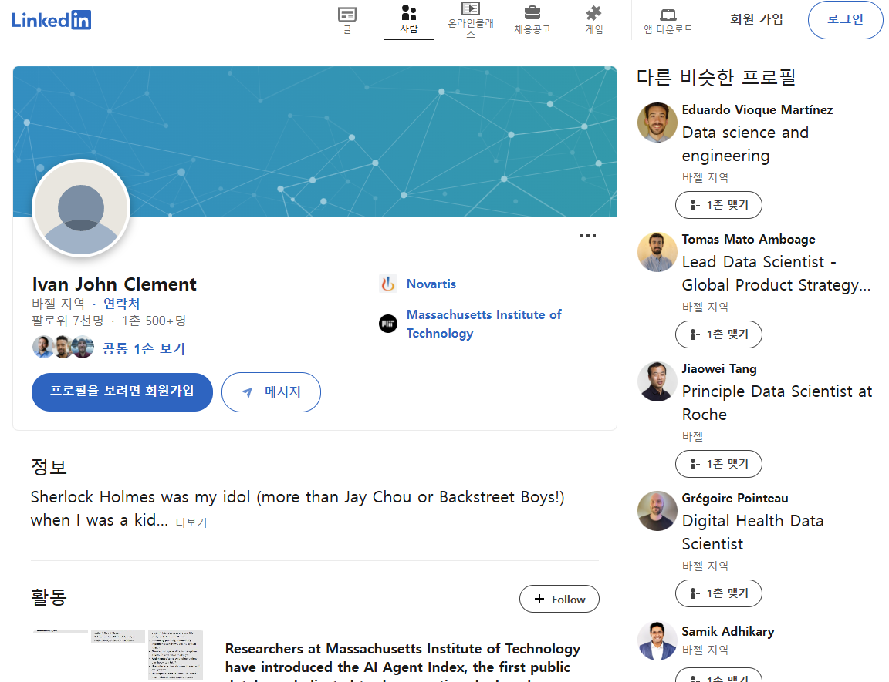
[ 링크드인 샘플 ]
2.4 안전한 사회
2.4.1 위험 조기포착을 통한 평안한 사회 실현
2.4.1.1 범죄 패턴 분석 및 예측
범죄예측에서도 데이터 과학자는 큰 역할을 하고 있음: 발생 후 대응 -> 발생전 예측(예방)
- 일정기간의 런던의 범죄 발생 빈도를 시각화한 히트맵(heatmap)의 활용을 예로 들 수 있음
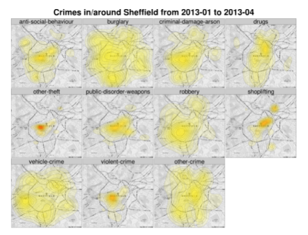
[ 런던 지역의 범죄 유형별 발생빈도 히트맵: https://blenditbayes.shinyapps.io/crimemap ]
자전거 절도나 빈집털이와 같은 단순범죄는 전 지역에 넓게 분포되어 있으나, 강도 등의 강력범죄는 특정 지역에 집중되어 있음을 쉽게 알 수 있음
- 높은 빈도를 보이는 곳에서 마약 거래가 이루어지는 것을 확인할 수 있고, 마약거래 지역을 중심으로 강력범죄가 퍼져 나가는 것을 알 수 있음
- 각 범죄 종류별로 같은 지역의 범죄 발생빈도를 비교하는 해당 데이터 시각화 기법은 1장에서 소개한 클리블랜드 교수의 격자형 그래프를 응용한 것임
본격적인 알고리즘 기반의 범죄예측 사례로 프레드폴(PredPol, Predictive Police)을 들 수 있음
UCLA(University of California, Los Angeles)에서 개발한 알고리즘을 사용한 프레드폴은 범죄가 발생한 장소 주변에서 비슷한 유형의 범죄가 마치 지진의 여진처럼 발생하는 원리를 응용한 것임
프레드폴은 예측박스(Predictive Boxes)를 제공하여 범죄 발생이 높은 구역을 알려 주어 순찰을 집중하도록 하였는데, 프레드폴의 도입효과는 실제로 범죄 발생 감소로 나타나 LA 경찰뿐 아니라 시애틀까지 확산된 바 있음
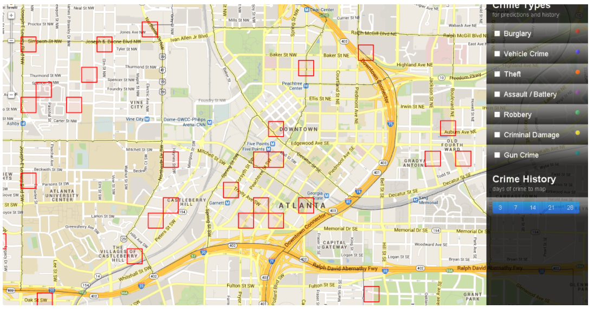
[ 프레드폴(PredPol) 시스템 화면: https://www.wabe.org/apd-rolls-out-crime-predicting-program/ ]
2.4.1.2 위험감지 분석
지진, 태풍, 폭우와 같은 자연의 변화는 예상하기 어려우나 자연재해에 대한 빠른 위험감지와 피해지역의 예측은 데이터 과학자들이 수행하고 있음
안전행정부의 스마트 빅 보드는 여러 센서를 통해 수집된 강수량 상황을 통해 위험지역을 종합적으로 가시화하는 상황판
날씨예보뿐 아니라 실시간 뉴스, 관련 트위터 정보 및 트위터 위치 등을 알 수 있는 다양한 데이터를 취합하여 위험 상황을 국민에게 서비스할 수 있는 재난관리 시스템
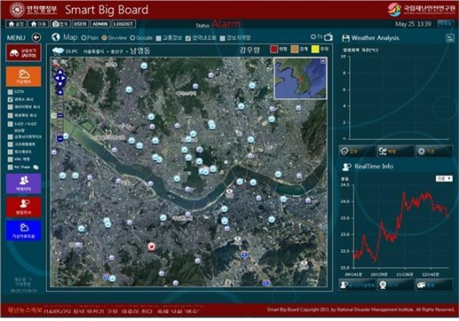
[ 안전행정부의 스마트 빅 보드: https://m.go.seoul.co.kr/news/newsView.php?id=20140729021006 ]
- 2012년 미국 동부를 강타한 허리케인 샌디(sandy)는 전 세계 금융의 중심지인 맨해튼을 포함한 대서양과 허드슨 강 인접지역을 침수시키면서 큰 피해를 줌
- 그 후 미국은 샌디의 피해 상황 및 지형의 특성을 고려한 대피지도를 작성하여 공개함
- 우리나라가 진행되는 위험을 감지하는 데 초첨을 맞췄다면 미국은 데이터 과학자를 동원하여 효과적이며 적극적인 행동 강령을 마련하는 데 주력했다는 것이 차이점임
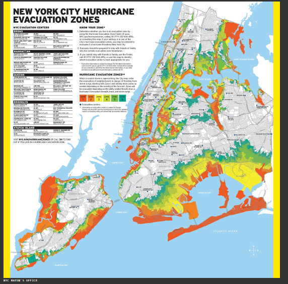
[ 뉴욕시의 허리케인 대응 대피지도: https://gothamist.com/news/map-nyc-has-new-hurricane-evacuation-zones ]
2.4.2 부정행위 방지를 통한 건전한 사회 실현
사회가 복잡해지고 서비스가 다양해지면서 다양한 유형의 사기가 발생함
- 사기탐지(fraud detection)를 통해 사기범을 색출하는 것도 중요하지만 사기 방지(fraud prevention)에 도움이 되는 시스템의 도입 및 알고리즘의 개발 등을 위해 데이터 과학자의 노력이 필요함
사기나 부정행위는 산업별 특성에 따라 그 유형 정의가 불가능할 정도로 다양하며 새로운 수법이 나타나고 있음
- 신용카드 사기: 타인 카드의 사용, 카드 복제 등
- 보험 사기: 가짜 사고 및 환자, 타인 명의 도용 등
- 인터넷 뱅킹 사기: 파밍(Pharming), 메모리 해킹 등
- 품질보증(warranty) 관련 사기: 제품번호를 도용한 가짜 수리 청구
- 자금세탁: 불법 증여, 탈세 등
- 정보유출이나 사이버 해킹
사기 유형이 다양한 만큼 데이터 과학자가 사용하는 분석방법은 정해진 것은 없으나, 가장 기본적인 방법은 1) 위험도 예측 모델링, 2) 관계망 분석, 3) 고도의 데이터 시각화를 들 수 있음
2.4.2.1 위험도 예측 모델링
과거의 사기 발생 여부를 정형화된 데이터 형태로 정리하여 예측 모델링을 통해 사기 발생에 대한 위험도 점수를 산출할 수 있음
예측 모델링 접근방법의 장점은 발생하는 거래 등에 대한 위험도를 점수로 산출할 수 있다는 점이고, 반면 단점은 다양한 사기 유형을 모두 반영한 예측모형 개발이 어렵고, 데이터가 축적되는 시간과 모형을 개발하는 시간이 필요하기 때문에 새로운 사기 유형을 반영하기 어렵다는 점임
이와 같은 단점을 보완하기 위해 예측모형의 위험도 점수와 새로운 사기 유형을 룰(rule)로 찾아내는 방식을 결합하여 사용하기도 함(의사결정나무를 활용하는 예측도 있지만, 신경망이나 로지스틱 회귀모형 등 다양한 방법이 위험점수 산출에 활용됨)
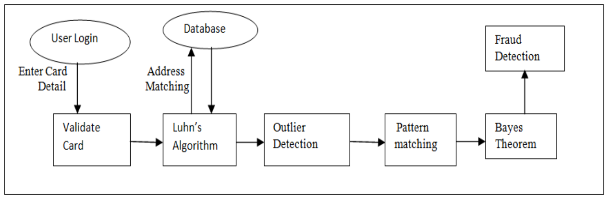
[ Architecture Diagram for Fraud Detection ]
2.4.2.2 관계망 분석
부정행위는 단족으로 진행할 수도 있지만, 지능화 집단화되는 추세에서는 여러 명이 동원되는 경우가 많으며, 동일 계좌로의 송금, 동일 기업에 근무하는 등 공통점에 의해 복잡한 관계망을 형성하는 것이 일반적임
자금을 세탁하기 위해 많은 사람이 동원되어 분산 계좌를 활용하는 경우, 관계망 분석은 협의를 포착하기 위한 필수적인 분석임
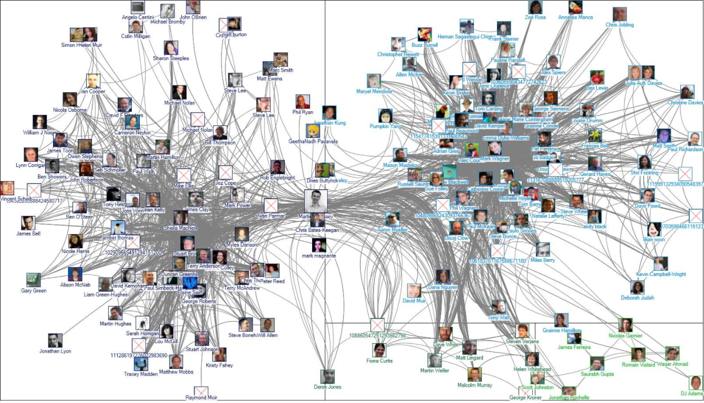
[ 사회연결망분석(Social Network Analysis): https://socialinnovation.tistory.com/413 ]
2.4.2.3 데이터 시각화
다양한 데이터 시각화 방법과 도구가 개발되고 대충화되어 사기나 불법행위와 같이 비정상적인 패턴을 탐지하는 데 많이 활용되고 있음
- 예) 국가별 인터넷 접속에 대한 링크 분석(link analysis)을 통해 사이버 공격의 원천 및 피해 국가 등을 한눈에 알 수 있는 시각화 등
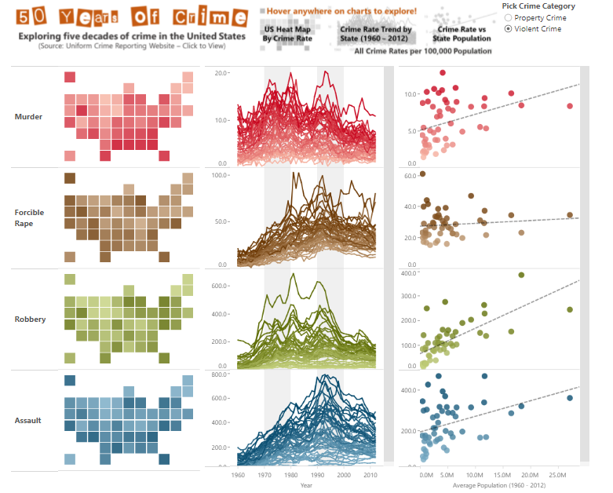
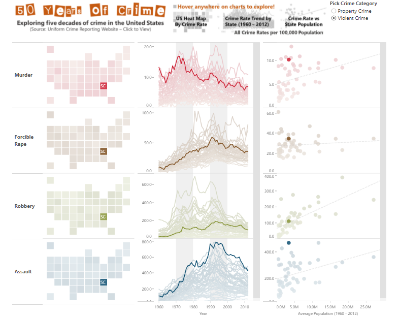
[ 50 years of crime in the US: https://public.tableau.com/app/profile/digitalteam/viz/50YearsofCrime_14/USCrimeDashboard ]